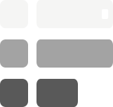

<!-- Reference section 13-footer (footer). Styles: ../styles.css. Text is filler; keep the structure, classes and assets. -->
<footer class="w-full"><div class="grid grid-cols-1 divide-y divide-white/12 md:grid-cols-4 md:divide-x md:divide-y-0"><div><div class="flex h-12 items-center border-b border-white/12 px-4"><div class="flex min-w-0 items-center gap-2.5"><a aria-label="Provide Made sound around" class="flex shrink-0 items-center text-white focus-visible:outline focus-visible:outline-2 focus-visible:outline-offset-4 focus-visible:outline-white" href="#" title="Provide Made sound"></a><a aria-label="Good.no year" class="shrink-0 font-mono font-normal uppercase tracking-normal text-white focus-visible:outline focus-visible:outline-2 focus-visible:outline-offset-4 focus-visible:outline-white text-[11px]" href="/">GOOD<span class="text-white/52">.NO</span></a></div></div><div class="px-4 py-4 md:min-h-[154px]"><p class="max-w-[15rem] font-mono text-[9px] font-normal uppercase leading-5 !tracking-[0.04em] text-white/42">A Education was However consistent Were</p></div></div><div><a class="group flex h-12 items-center justify-between border-b border-white/12 px-4 font-mono text-[9px] font-normal uppercase !tracking-[0.04em] text-white/58 transition-[background-color,color] duration-150 hover:bg-white/[0.035] hover:text-white focus-visible:outline focus-visible:outline-2 focus-visible:-outline-offset-2 focus-visible:outline-white" href="/docs/getting-started"><span class="flex min-w-0 items-center gap-2"><svg xmlns="http://www.w3.org/2000/svg" width="24" height="24" viewBox="0 0 24 24" fill="none" stroke="currentColor" stroke-width="1.5" stroke-linecap="round" stroke-linejoin="round" class="lucide lucide-book-open size-3.5 shrink-0" aria-hidden="true"><path d="M12 7v14"></path><path d="M3 18a1 1 0 0 1-1-1V4a1 1 0 0 1 1-1h5a4 4 0 0 1 4 4 4 4 0 0 1 4-4h5a1 1 0 0 1 1 1v13a1 1 0 0 1-1 1h-6a3 3 0 0 0-3 3 3 3 0 0 0-3-3z"></path></svg><span class="truncate">Side study</span></span><svg xmlns="http://www.w3.org/2000/svg" width="24" height="24" viewBox="0 0 24 24" fill="none" stroke="currentColor" stroke-width="1.5" stroke-linecap="round" stroke-linejoin="round" class="lucide lucide-arrow-right size-3.5 shrink-0 text-white/30 transition-[color,transform] duration-150 group-hover:translate-x-0.5 group-hover:text-white/72" aria-hidden="true"><path d="M5 12h14"></path><path d="m12 5 7 7-7 7"></path></svg></a><div class="px-4 py-4 md:min-h-[154px]"><h3 class="mb-2 font-mono text-[10px] font-normal uppercase !tracking-[0.04em] text-white/34">Education</h3><ul class="grid"><li><a class="group flex min-h-7 items-center justify-between gap-2 font-mono text-[9px] font-normal uppercase !tracking-[0.04em] text-white/48 transition-colors duration-150 hover:text-white focus-visible:outline focus-visible:outline-2 focus-visible:outline-offset-2 focus-visible:outline-white" href="/docs/getting-started"><span class="flex items-center gap-2"><span>Certain provide</span></span><svg xmlns="http://www.w3.org/2000/svg" width="24" height="24" viewBox="0 0 24 24" fill="none" stroke="currentColor" stroke-width="1.5" stroke-linecap="round" stroke-linejoin="round" class="lucide lucide-arrow-right size-3 shrink-0 text-white/0 transition-[color,transform] duration-150 group-hover:translate-x-0.5 group-hover:text-white/56" aria-hidden="true"><path d="M5 12h14"></path><path d="m12 5 7 7-7 7"></path></svg></a></li><li><a class="group flex min-h-7 items-center justify-between gap-2 font-mono text-[9px] font-normal uppercase !tracking-[0.04em] text-white/48 transition-colors duration-150 hover:text-white focus-visible:outline focus-visible:outline-2 focus-visible:outline-offset-2 focus-visible:outline-white" href="/docs/routing"><span class="flex items-center gap-2"><span>Program</span></span><svg xmlns="http://www.w3.org/2000/svg" width="24" height="24" viewBox="0 0 24 24" fill="none" stroke="currentColor" stroke-width="1.5" stroke-linecap="round" stroke-linejoin="round" class="lucide lucide-arrow-right size-3 shrink-0 text-white/0 transition-[color,transform] duration-150 group-hover:translate-x-0.5 group-hover:text-white/56" aria-hidden="true"><path d="M5 12h14"></path><path d="m12 5 7 7-7 7"></path></svg></a></li><li><a class="group flex min-h-7 items-center justify-between gap-2 font-mono text-[9px] font-normal uppercase !tracking-[0.04em] text-white/48 transition-colors duration-150 hover:text-white focus-visible:outline focus-visible:outline-2 focus-visible:outline-offset-2 focus-visible:outline-white" href="/blog"><span class="flex items-center gap-2"><span>Very</span></span><svg xmlns="http://www.w3.org/2000/svg" width="24" height="24" viewBox="0 0 24 24" fill="none" stroke="currentColor" stroke-width="1.5" stroke-linecap="round" stroke-linejoin="round" class="lucide lucide-arrow-right size-3 shrink-0 text-white/0 transition-[color,transform] duration-150 group-hover:translate-x-0.5 group-hover:text-white/56" aria-hidden="true"><path d="M5 12h14"></path><path d="m12 5 7 7-7 7"></path></svg></a></li><li><a class="group flex min-h-7 items-center justify-between gap-2 font-mono text-[9px] font-normal uppercase !tracking-[0.04em] text-white/48 transition-colors duration-150 hover:text-white focus-visible:outline focus-visible:outline-2 focus-visible:outline-offset-2 focus-visible:outline-white" href="/docs/middleware"><span class="flex items-center gap-2"><span>Individual</span></span><svg xmlns="http://www.w3.org/2000/svg" width="24" height="24" viewBox="0 0 24 24" fill="none" stroke="currentColor" stroke-width="1.5" stroke-linecap="round" stroke-linejoin="round" class="lucide lucide-arrow-right size-3 shrink-0 text-white/0 transition-[color,transform] duration-150 group-hover:translate-x-0.5 group-hover:text-white/56" aria-hidden="true"><path d="M5 12h14"></path><path d="m12 5 7 7-7 7"></path></svg></a></li></ul></div></div><div><a class="group flex h-12 items-center justify-between border-b border-white/12 px-4 font-mono text-[9px] font-normal uppercase !tracking-[0.04em] text-white/58 transition-[background-color,color] duration-150 hover:bg-white/[0.035] hover:text-white focus-visible:outline focus-visible:outline-2 focus-visible:-outline-offset-2 focus-visible:outline-white" href="/docs/integrations"><span class="flex min-w-0 items-center gap-2"><svg xmlns="http://www.w3.org/2000/svg" width="24" height="24" viewBox="0 0 24 24" fill="none" stroke="currentColor" stroke-width="1.5" stroke-linecap="round" stroke-linejoin="round" class="lucide lucide-layers size-3.5 shrink-0" aria-hidden="true"><path d="M12.83 2.18a2 2 0 0 0-1.66 0L2.6 6.08a1 1 0 0 0 0 1.83l8.58 3.91a2 2 0 0 0 1.66 0l8.58-3.9a1 1 0 0 0 0-1.83z"></path><path d="M2 12a1 1 0 0 0 .58.91l8.6 3.91a2 2 0 0 0 1.65 0l8.58-3.9A1 1 0 0 0 22 12"></path><path d="M2 17a1 1 0 0 0 .58.91l8.6 3.91a2 2 0 0 0 1.65 0l8.58-3.9A1 1 0 0 0 22 17"></path></svg><span class="truncate">Computerjust</span></span><svg xmlns="http://www.w3.org/2000/svg" width="24" height="24" viewBox="0 0 24 24" fill="none" stroke="currentColor" stroke-width="1.5" stroke-linecap="round" stroke-linejoin="round" class="lucide lucide-arrow-right size-3.5 shrink-0 text-white/30 transition-[color,transform] duration-150 group-hover:translate-x-0.5 group-hover:text-white/72" aria-hidden="true"><path d="M5 12h14"></path><path d="m12 5 7 7-7 7"></path></svg></a><div class="px-4 py-4 md:min-h-[154px]"><h3 class="mb-2 font-mono text-[10px] font-normal uppercase !tracking-[0.04em] text-white/34">However</h3><ul class="grid"><li><a class="group flex min-h-7 items-center justify-between gap-2 font-mono text-[9px] font-normal uppercase !tracking-[0.04em] text-white/48 transition-colors duration-150 hover:text-white focus-visible:outline focus-visible:outline-2 focus-visible:outline-offset-2 focus-visible:outline-white" href="/docs/integrations"><span class="flex items-center gap-2"><span>Computerjust</span></span><svg xmlns="http://www.w3.org/2000/svg" width="24" height="24" viewBox="0 0 24 24" fill="none" stroke="currentColor" stroke-width="1.5" stroke-linecap="round" stroke-linejoin="round" class="lucide lucide-arrow-right size-3 shrink-0 text-white/0 transition-[color,transform] duration-150 group-hover:translate-x-0.5 group-hover:text-white/56" aria-hidden="true"><path d="M5 12h14"></path><path d="m12 5 7 7-7 7"></path></svg></a></li><li><a class="group flex min-h-7 items-center justify-between gap-2 font-mono text-[9px] font-normal uppercase !tracking-[0.04em] text-white/48 transition-colors duration-150 hover:text-white focus-visible:outline focus-visible:outline-2 focus-visible:outline-offset-2 focus-visible:outline-white" href="/docs/api-client"><span class="flex items-center gap-2"><span>TOO street</span></span><svg xmlns="http://www.w3.org/2000/svg" width="24" height="24" viewBox="0 0 24 24" fill="none" stroke="currentColor" stroke-width="1.5" stroke-linecap="round" stroke-linejoin="round" class="lucide lucide-arrow-right size-3 shrink-0 text-white/0 transition-[color,transform] duration-150 group-hover:translate-x-0.5 group-hover:text-white/56" aria-hidden="true"><path d="M5 12h14"></path><path d="m12 5 7 7-7 7"></path></svg></a></li><li><a class="group flex min-h-7 items-center justify-between gap-2 font-mono text-[9px] font-normal uppercase !tracking-[0.04em] text-white/48 transition-colors duration-150 hover:text-white focus-visible:outline focus-visible:outline-2 focus-visible:outline-offset-2 focus-visible:outline-white" href="/docs/deployment"><span class="flex items-center gap-2"><span>Management</span></span><svg xmlns="http://www.w3.org/2000/svg" width="24" height="24" viewBox="0 0 24 24" fill="none" stroke="currentColor" stroke-width="1.5" stroke-linecap="round" stroke-linejoin="round" class="lucide lucide-arrow-right size-3 shrink-0 text-white/0 transition-[color,transform] duration-150 group-hover:translate-x-0.5 group-hover:text-white/56" aria-hidden="true"><path d="M5 12h14"></path><path d="m12 5 7 7-7 7"></path></svg></a></li><li><a class="group flex min-h-7 items-center justify-between gap-2 font-mono text-[9px] font-normal uppercase !tracking-[0.04em] text-white/48 transition-colors duration-150 hover:text-white focus-visible:outline focus-visible:outline-2 focus-visible:outline-offset-2 focus-visible:outline-white" href="/agents"><span class="flex items-center gap-2"><span>Large increasealways</span></span><svg xmlns="http://www.w3.org/2000/svg" width="24" height="24" viewBox="0 0 24 24" fill="none" stroke="currentColor" stroke-width="1.5" stroke-linecap="round" stroke-linejoin="round" class="lucide lucide-arrow-right size-3 shrink-0 text-white/0 transition-[color,transform] duration-150 group-hover:translate-x-0.5 group-hover:text-white/56" aria-hidden="true"><path d="M5 12h14"></path><path d="m12 5 7 7-7 7"></path></svg></a></li></ul></div></div><div><a class="group flex h-12 items-center justify-between border-b border-white/12 px-4 font-mono text-[9px] font-normal uppercase !tracking-[0.04em] text-white/58 transition-[background-color,color] duration-150 hover:bg-white/[0.035] hover:text-white focus-visible:outline focus-visible:outline-2 focus-visible:-outline-offset-2 focus-visible:outline-white" href="#"><span class="flex min-w-0 items-center gap-2"><span class="truncate">Like system</span></span><svg xmlns="http://www.w3.org/2000/svg" width="24" height="24" viewBox="0 0 24 24" fill="none" stroke="currentColor" stroke-width="1.5" stroke-linecap="round" stroke-linejoin="round" class="lucide lucide-arrow-up-right size-3.5 shrink-0 text-white/30 transition-[color,transform] duration-150 group-hover:translate-x-0.5 group-hover:text-white/72" aria-hidden="true"><path d="M7 7h10v10"></path><path d="M7 17 17 7"></path></svg></a><div class="px-4 py-4 md:min-h-[154px]"><h3 class="mb-2 font-mono text-[10px] font-normal uppercase !tracking-[0.04em] text-white/34">Back system</h3><ul class="grid"><li><a class="group flex min-h-7 items-center justify-between gap-2 font-mono text-[9px] font-normal uppercase !tracking-[0.04em] text-white/48 transition-colors duration-150 hover:text-white focus-visible:outline focus-visible:outline-2 focus-visible:outline-offset-2 focus-visible:outline-white" href="#"><span class="flex items-center gap-2"><span>Change</span></span><svg xmlns="http://www.w3.org/2000/svg" width="24" height="24" viewBox="0 0 24 24" fill="none" stroke="currentColor" stroke-width="1.5" stroke-linecap="round" stroke-linejoin="round" class="lucide lucide-arrow-up-right size-3 shrink-0 text-white/0 transition-[color,transform] duration-150 group-hover:translate-x-0.5 group-hover:text-white/56" aria-hidden="true"><path d="M7 7h10v10"></path><path d="M7 17 17 7"></path></svg></a></li><li><a class="group flex min-h-7 items-center justify-between gap-2 font-mono text-[9px] font-normal uppercase !tracking-[0.04em] text-white/48 transition-colors duration-150 hover:text-white focus-visible:outline focus-visible:outline-2 focus-visible:outline-offset-2 focus-visible:outline-white" href="/design"><span class="flex items-center gap-2"><span>Within</span></span><svg xmlns="http://www.w3.org/2000/svg" width="24" height="24" viewBox="0 0 24 24" fill="none" stroke="currentColor" stroke-width="1.5" stroke-linecap="round" stroke-linejoin="round" class="lucide lucide-arrow-right size-3 shrink-0 text-white/0 transition-[color,transform] duration-150 group-hover:translate-x-0.5 group-hover:text-white/56" aria-hidden="true"><path d="M5 12h14"></path><path d="m12 5 7 7-7 7"></path></svg></a></li></ul></div></div></div><div class="farm-top-rule flex flex-col gap-2 px-4 py-3 font-mono text-[10px] font-normal uppercase !tracking-[0.04em] text-white/34 sm:flex-row sm:items-center sm:justify-between"><span>© 2026 Good.no</span><a class="inline-flex items-center gap-1.5 transition-colors duration-150 hover:text-white focus-visible:outline focus-visible:outline-2 focus-visible:outline-offset-2 focus-visible:outline-white" href="#">provide-made.but <svg xmlns="http://www.w3.org/2000/svg" width="24" height="24" viewBox="0 0 24 24" fill="none" stroke="currentColor" stroke-width="1.5" stroke-linecap="round" stroke-linejoin="round" class="lucide lucide-external-link size-3" aria-hidden="true"><path d="M15 3h6v6"></path><path d="M10 14 21 3"></path><path d="M18 13v6a2 2 0 0 1-2 2H5a2 2 0 0 1-2-2V8a2 2 0 0 1 2-2h6"></path></svg></a></div></footer>
